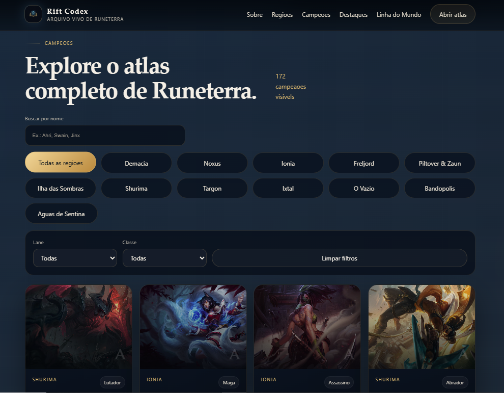

sobre o projeto
Interface viva orientada por narrativa e estrutura
O Rift Codex organiza informação como um sistema explorável. Cada bloco visual tem função de leitura, cada camada ajuda na navegação e o layout reforça a sensação de um produto digital real.
objetivo
Construir um case autoral com identidade forte e leitura fluida
O objetivo foi sair do portfólio comum e desenhar uma experiência com direção visual clara, conteúdo hierarquizado e microinterações discretas, úteis para guiar o usuário sem poluir a interface.
tecnologias utilizadas
Base front-end com execução visual consistente
A stack prioriza velocidade de prototipação e controle fino da interface, permitindo evoluir o produto com clareza em estrutura, estilo e comportamento.
processo de desenvolvimento
Exploração, refinamento e consistência de interface
O fluxo de construção passou por três frentes: arquitetura de conteúdo, ritmo visual e ajustes de usabilidade. A busca por campeões foi desenhada para reduzir fricção, com pesquisa por nome e filtros por região e classe em tempo real.

resultado e aprendizados
Evolução em produto, narrativa e tomada de decisão visual
O projeto consolidou uma abordagem mais madura de UI: hierarquia forte, leitura confortável e identidade própria. Como próximo passo, a evolução natural é ampliar componentes e integrar dados dinâmicos.